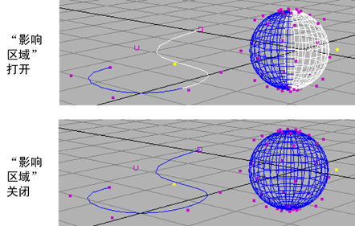
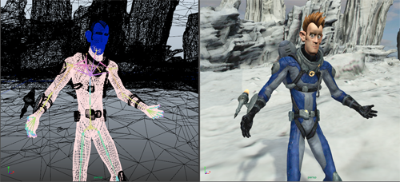
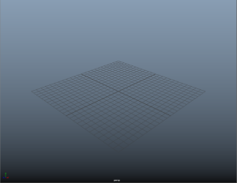

可以在“首选项”(Preferences)窗口的显示(Display)类别中设置以下首选项。
若要返回到出厂默认设置，请在此窗口中选择。这将重置“首选项”(Preferences)窗口中每个类别的首选项。
性能(Performance)
- 渲染样例(启动)(Render swatches (startup))
-
在 Maya 启动时，禁用此选项可在Hypershade、“属性编辑器”(Attribute Editor)和“节点编辑器”(Node Editor)中禁用样例渲染，从而可提高性能。您可以在“节点编辑器”(Node Editor)菜单中覆盖该选项。
提示： 此选项可能有助于改善因样例刷新导致的性能下降。您可以覆盖此选项，然后可以通过从“节点编辑器”(Node Editor)的“选项”(Options)菜单启用“选项 > 渲染样例”(Options > Render Swatches)选项来针对当前 Maya 会话重新启用样例渲染。 - 样例的最大分辨率(Max res. for swatches)
-
现在，可以为“材质示例”样例设定最大分辨率。如果文件纹理大小超过指定的分辨率，则不会创建样例，除非通过以下方式明确请求：在“Hypershade”中，在样例上单击鼠标右键并从标记菜单中选择“刷新样例”(Refresh Swatch)；或者，在“材质示例”样例中，在“属性编辑器”(Attribute Editor)内，单击该样例以刷新显示。
设置最大分辨率可以减少内存消耗、缩短转化时间并提高性能，特别是在处理许多大型纹理时尤其如此。这对于初始加载许多大型文件纹理最为有用。样例创建之后，它将始终显示。
从下拉列表中选择最大分辨率。也可以选择“自定义”(Custom)选项，并输入所需的分辨率。分辨率高于此值的文件纹理不会显示在“属性编辑器”(Attribute Editor)或“Hypershade”的“材质示例”样例中。默认为 2Kx2K。
- 自定义分辨率(Custom Resolution)
-
从“样例的最大分辨率”(Max res. for swatches)的下拉列表中选择“自定义”(Custom)，然后在此字段中输入文件纹理的分辨率。
- 材质加载模式(Material Loading Mode)
-
在不同的纹理加载模式中进行选择。
- “即时”(Immediate)：选择“即时”(Immediate)模式可使加载时间最短。加载许多材质或纹理（例如，加载新场景或切换视口模式）时，在与场景交互之前可能会有短暂的延迟。
此模式提供与早期版本（Maya 2015 和更低版本）相同的行为，并且是默认选项。
- “平行”(Parallel)：如果在材质实现和纹理加载时希望能够与场景进行交互，请选择“平行”(Parallel)模式。
“平行”(Parallel)模式启用单独的线程来存储材质实现和纹理加载请求，因此在纹理加载时您可以继续在场景上工作。整体加载时间通常是“即时”(Immediate)模式的 1.1 倍。
- “延缓”(Deferred)：仅当在使用“平行”(Parallel)模式的过程中遇到不稳定时才选择“延缓”(Deferred)模式。
“延缓”(Deferred)模式在单独的线程中加载纹理，存储材质实现请求，并在后续帧中分配工作，以便在材质实现和纹理加载时您可以继续工作。副作用是整体加载时间可能比“即时”(Immediate)模式长得多，因为它引入了额外的帧刷新工作。如果具有有限的 CPU 核心但仍希望在纹理加载时与场景进行交互，则尝试此模式。
若要查看纹理加载的状态，请选择“显示 > 平视显示仪 > 材质加载详细信息”(Display > Heads Up Display > Material Loading Details)。
- “即时”(Immediate)：选择“即时”(Immediate)模式可使加载时间最短。加载许多材质或纹理（例如，加载新场景或切换视口模式）时，在与场景交互之前可能会有短暂的延迟。
- 场景加载时生成 UV 平铺预览(Generate UV tile previews on scene load)
-
与 UV 平铺功能配合使用，使您可以仅使用一个“文件”(File)纹理节点来渲染多个 UV 纹理。有关详细信息，请参见通过单个纹理节点加载多个平铺 UV 纹理(Loading multitiled UV textures through a single texture node)。
默认情况下，第一次打开场景时，Maya 不会在“Viewport 2.0”中加载 UV 平铺纹理。通过启用该选项，您可以选择在场景加载时在“Viewport 2.0”中预览 UV 平铺。如果不修改 UV 平铺，您可以始终在场景加载时自动预览纹理。但是，如果修改 UV 平铺，您必须通过单击“生成预览*”(Generate Preview*)再次手动重新生成预览。
- 暂停 Viewport 2.0 (启动)(Pause Viewport 2.0 (startup))
-
选择此选项可在启动后暂停 Viewport 2.0。“材质查看器”(Material Viewer)（如果设置为使用硬件渲染器）和其他编辑器（例如，“UV 编辑器”(UV Editor)）也会因此暂停。暂停的编辑器以红色边界显示，且文本“暂停”(Paused)指示其暂停状态。请参见在 Hypershade 中暂停 Viewport 2.0 和材质查看器(Pause Viewport 2.0 and the Material Viewer in the Hypershade)
View
- 轴(Axes)
-
显示一个或两个 XYZ 坐标（视图轴和原点轴）。如果禁用两个选择，则不会出现 XYZ 坐标。
- 视图轴(View Axis)
-
在视图的左下角显示 XYZ 坐标。默认设置为启用。
- 原点轴(Origin Axis)
-
在坐标 0, 0, 0 处显示 XYZ 坐标。默认设置为“禁用”。
- 栅格平面(Grid plane)
-
显示或隐藏栅格平面。该栅格是 2D 平面，可表示视图中的 3D 维度。如果需要设置与实体曲面相对的运动，它将十分有用。选择“隐藏”(Hide)以隐藏栅格。默认为“显示”。
该设置将覆盖从“显示 > 栅格”(Display > Grid) >
 访问的栅格选项(Grid Options)设置。
访问的栅格选项(Grid Options)设置。
- 活动对象枢轴(Active object pivots)
-
指定是否显示枢轴点。默认设置为“禁用”。
- 着色对象上的线框(Wireframe on shaded)
-
选择要如何显示着色对象上的线框。
- 完全(Full)
-
显示着色对象上的普通分辨率线框。这是默认选项。
- 精简(Reduced)
-
显示着色对象上较少的线。
- 无(None)
-
不显示着色对象上的线。性能得到增强。
- 影响区域(Region of effect)
-
该选项允许启用或禁用影响区域的显示。“影响区域”(Region of effect)是随移动的选定 CV 潜在更改的对象的一部分。曲线将显示影响区域和曲面。默认设置为启用。
 - 对模板进行着色(Shade templates)
-
如果启用，则模板对象在着色视图中显示为着色。如果禁用，则模板对象显示为线框，而其他所有对象显示为着色。默认设置为“禁用”。
 - 背景渐变(Background gradient)
-
启用时，主视口将显示渐变背景色，如下所示。默认设置为禁用，并显示为纯灰色。请参见更改场景视图背景色(Change the scene view background color)。
 - 线宽(Line Width)
- 调整场景中的实线和虚线的线宽度。使用该属性可以创建更粗的线。
注： Viewport 2.0 工作区，以及使用“Maya 硬件 2.0”(Maya Hardware 2.0)渲染器的批渲染、播放预览和渲染视图渲染中都会考虑此设置。首先在“渲染设置”(Render Settings)窗口的“渲染选项”(Render Options)部分中，启用“对象类型过滤器”(Object Type Filter)标题下的“UI”选项。（“使用以下渲染器渲染”(Render Using)设定为“Maya 硬件 2.0”(Maya Hardware 2.0)。）
Viewport 2.0
- 渲染引擎(Rendering engine)
-
指定要在视口中使用的渲染引擎：
- DirectX 11
-
这是 DirectX 的版本 11，它相当于“OpenGL 核心配置”(OpenGL Core Profile)。使用此模式可查看 DirectX 11 着色器。
有关 DirectX 11 的详细信息，请参见在 DirectX 11 模式下运行 Viewport 2.0(Run Viewport 2.0 in DirectX 11 mode) 和 DirectX 11 着色器(DirectX 11 Shader)。
- OpenGL - 旧版(OpenGL - Legacy)
- 这是 OpenGL 的旧式版本，它相当于 DirectX 版本 8/9。如果要查看 CgFx 着色器，请使用此模式。
- OpenGL - 核心配置(兼容性)(OpenGL - Core Profile (Compatibility))
-
此模式仅适用于 Windows 和 Linux 平台，是这些平台上的默认渲染引擎。
这是 OpenGL 的新版本。通过它可获取与在 DirectX 11 模式下相同的视觉保真度。如果要渲染 GLSL 着色器，请使用此模式。
此模式支持以下版本的所有功能：
- OpenGL 2.1 及更低版本
- OpenGL 3.2 及更高版本
如果插件使用 OpenGL 先前版本中的功能，但您还想利用 OpenGL 3.2 及更高版本中的功能，请选择此模式。
注：“OpenGL - 旧版”(OpenGL - Legacy)和“OpenGL - 核心配置”(OpenGL - Core Profile)在视口中提供相同的渲染质量。
但是，“OpenGL - 核心配置”(OpenGL - Core Profile)充分利用细分和置换等最新 OpenGL 技术（通过使用 GLSL 着色器即可轻松实现），但这在“OpenGL - 旧版”(OpenGL - Legacy)模式下需要使用 OpenSubdiv。
- OpenGL - 核心配置(精确)(OpenGL - Core Profile (Strict))
-
这是 OpenGL 的新版本。通过它可获取与在 DirectX 11 模式下相同的视觉保真度。如果要渲染 GLSL 着色器，请使用此模式。
此模式允许充分利用 OpenGL 版本 3.2 及更高版本中的功能。此模式中不支持 OpenGL 版本 2.1 及更低版本中的功能。
有关详细信息，请参见 GLSL 着色器(GLSL shader)和创建和可视化 GLSL 着色器(Create and visualize a GLSL shader)。
这是 macOS X 平台上的默认渲染引擎。
- 以完全分辨率渲染 OpenGL 曲面(Render OpenGL surfaces at full resolution)
-
此设置仅适用于 macOS 用户。默认设置为启用，此时会为视口功能（例如，在场景中播放和翻滚）提供最佳分辨率，但会降低性能。禁用此设置将提高视口性能，但会降低总体视口分辨率。若要禁用此设置，请选择“显示”(Display) > 取消选中“以完全分辨率渲染 OpenGL 曲面”(Render OpenGL surfaces at full resolution)
>“保存”(Save)，然后重新启动 Maya 以使更改生效。
注： 此首选项设置会影响所有 OpenGL 面板，如视口和 UV 编辑器(UV Editor)。